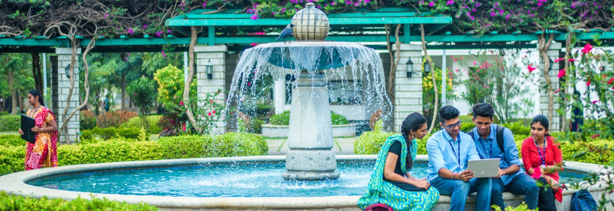

TLDR; Indian kid in an Engineering College Dreaming BIG
If you're hoping for a gloomy and happy story, I must warn you! Better not continue, you might get hurt! It was all in place until grade X public exams were about to begin. I felt satisified with my preparation and did my exams well enough to earn a 10 pointer. I was cloud nine, when my results were out! I was a pretty peaceful phase in my life. Little did I know that it was the silence before the Tsunami.
Just like any Indian kid's life turns into full fledged preparation sacrificing family life and social life. Mine didn't turn any better! There were days, not once but many, when I couldn't see my father although we lived under the same roof. I felt the heat that preparing for college isn't going to be easy. Oh yes! It all paid off when I scored a perfect score in the 3 SAT Subject Tests - Math Level 2, Chemistry and Physics. I was the happiest person on this planet when I got my grade XII result of 94.8 %. I assure you that you'll never be able to find a happier person than I was. I was literally on top of the world. But, other things didn't turn the way I wanted them to be. I got rejected in the DASA quota for pool of colleges that I had given, mind you that I scored the maximum achievable score in those exams and still couldn't get through. For those, who found it wague, DASA is like JoSAA for IITs, NITs and other central government undertaking colleges, but for Non-resdiential Indians. It was one of the darkest phases in my life. I was hoping for a light at the end of the road. Let me tell you I did apply to two other institutions out of safety for a backup, it came in handy, got through at both places. One, the mighty Anna University's College of Engineering, and the other is my love, SSN College of Engineering. Here, I am today, a proud SSNite! I don't regret choosing SSN over CEG even a single day. I just love the college's vibe and ambience. And I assure you will do too!